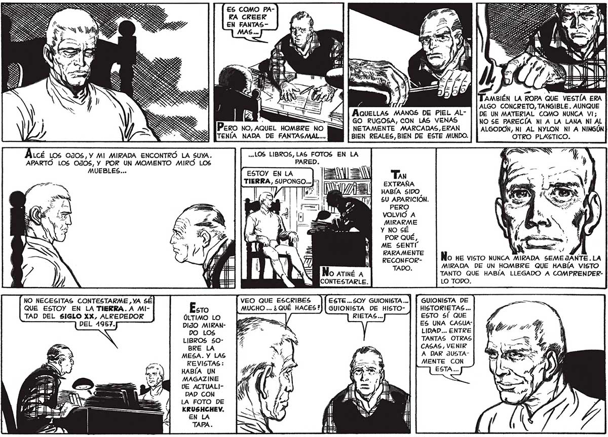

14 LCÉ LOS OJOS, Y MI MIRADA ENCONTRÓ LA SUYA. APARTO LOS OJOS, Y POR UN MOMENTO MIRO LOS MUEBLES... NO NECESITAS CONTESTARME , YA SE QUE ESTOY EN LA TIERRA. A MITAD DEL SIGLO XX, ALREDEDOR ÚLTIMO LO DIJO MIRANDO LOS LIBROS 50BRE LA MESA. Y LAS REVISTAS: HABÍA UN MAGAZINE DE ACTUAL]DAD CON LA FOTO DE KRUSHCHEV, ES COMO PARA CREER EN FANTASA ; TAMBIÉN LA ROPA QUE VESTÍA ERA ALGO CONCRETO, TANGIBLE. AUNQUE AÁlueLLAS MANOS DE PIEL AL- | | DE UN MATERIAL COMO NUNCA VI; GO RUGOSA, CON LAS VENAS NO SE PARECÍA NI A LA LANA NI AL NETAMENTE MARCADAS,ERAN ALGODON, NI AL NYLON NI A NINGÚN BIEN REALES, BIEN DE ESTE MUNDO. OTRO PLASTICO. «LOS LIBROS, LAS FOTOS EN LA PARED. ESTOY EN LA = = TIERRA, SUPONGO... 3 [P HABÍA SIDO £U APARICIÓN. PERO VOLVIÓ A MIRARME % úl AMS . : ¡a POR QUÉ, ME SENTI RARAMENTE — | pa 0 RECONFOR- O HE VISTO NUNCA MIRADA SEMEJANTE.LA * Ú Y NO SÉ 4 4 TADO. MIRADA DE UN HOMBRE QUE HABÍA VISTO No ATINÉ A TANTO QUE HABÍA LLEGADO A COMPRENDERCONTESTARLE. LO TODO. VEO QUE ESCRIBES ESTE... SOY GUIONISTA ... GUIONISTA DE MUCHO ... ¿ QUE HACES?) | GUIONISTA DE HISTO- HISTORIETAS... RIETAS... ESTO $! QUE ES UNA CASUALIDAD... ENTRE TANTAS OTRAS CASAS, VENIR A DAR JUSTAMENTE CON
